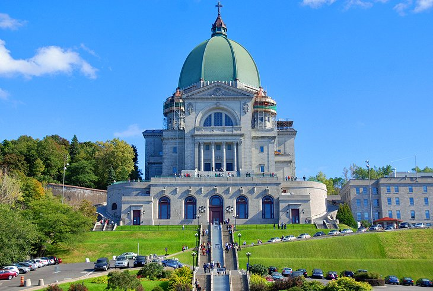

Discover The City
1. Mont-Royal
Mont-Royal rises 233 meters above the city and is the green lung near the city center. A stroll through this lovely park enables the visitor to see monuments to Jacques Cartier and King George VI, to spend some time by Lac-aux-Castors, and to have a look at the cemeteries on the western slope where the city's different ethnic groups have rested in peace together for centuries
2 Vieux-Montreal (Old Montreal)

Old Montréal is a remarkable concentration of buildings dating from the 17th, 18th, and 19th centuries. The district has the delightful feel of a Parisian-style quarter, situated as it is between the waterfront and the business hub. Its many historic sites, streets, and landmarks are best explored on foot. Of the many things to do here, the highlights are visiting the Pointe-à-Callière museum of archaeology and history, the twin-towered Notre-Dame Basilica, the quays of the revitalized Old Port, and the open-air gathering space of Place Jacques-Cartier.
3. Oratoire Saint-Joseph (St. Joseph's Oratory)
The Oratoire Saint-Joseph, near the western exit from Mount Royal Park, is dedicated to Canada's patron saint. It is a mecca for pilgrims, with its huge Renaissance-style domed basilica dating to 1924. Brother André of the Congrégation de Sainte-Croix had already built a small chapel here in 1904, where he performed miraculous acts of healing for which he was canonized in 1982. His tomb is in one part of the sanctuary in the original chapel. Votive gifts are displayed in a second chapel. A cloister behind the church leads up to Mont-Royal. There is a good northwest view from the observatory over Montréal and Lac Saint-Louis.